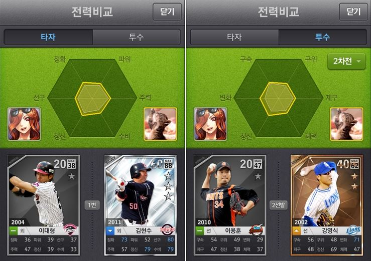

1. How to Use (사용법)
a. You can start visualization of sample music by clicking anywhere on the web page. The sample song is 'Right here waiting for you' of Bernard Park.
(웹페이지상의 아무 곳이나 클릭하시면 곡이 재생되면서 시각화를 시작합니다. 나오는 곡은 버나드 박의 'Right Here Waiting for You' 입니다.^3^)
b. You can pause visualization of sample music by clicking anywhere again.
(화면을 다시 클릭하면 곡의 재생과 시각화가 멈춥니다.)
c. You can control color of background, line and decagon as well as line weight and decagon opacity with color selectors and slide bars in CONTROL BOX.
(컨트롤 박스의 색상 선택기와 슬라이드바로 배경색, 다각형색, 선색, 선두께, 다각형 투명도를 조절해보세요.)
d. You can change the input mode to mic by pressing the red button named MIC.
(MIC라고 쓰여져 있는 빨간 버튼을 누르면 예시 곡 대신 마이크로 입력되는 소리에 대한 시각화를 실행할 수 있습니다.)
e. You can change the input mode to sample song again by pressing the blue button named MP3.
(MIC 입력 모드로 바꾸셨다면, MP3라고 쓰여져 있는 파란 버튼을 눌러서 다시 예시 곡에 대한 시각화를 실행할 수 있습니다.)
2. Visualization Principle (시각화 원리)
If sound signal is entered to computer by song file or mic input, this program use FFT to transform the signal of every moment into the combination of various sinusoids that have different frequencies. Then, it divide audible frequency range, 20-20000Hz, into 10 bands and calculate average energy of input sound signal at each band. This bands represent each octave of same note groups. Since the frequency becomes doubled when we raise an octave, the border values of each bands are 20Hz, 40Hz, 80Hz, etc. The average energy at each band is represented as how far is the vertex of decagon from the center of canvas. Frequency increases with clockwise direction and the lowest octave band is located on the line that has the biggest inclination in upper right part of the screen.
(노래 음원이나 마이크 입력을 통해 소리가 컴퓨터로 입력되면, 이 프로그램은 FFT(고속푸리에변환)을 이용하여 순간순간의 소리 샘플들을 서로 다른 다양한 진동수의 정현파의 조합으로 분석합니다. 다음으로 가청 주파수 범위인 20Hz부터 20000Hz까지를 10구간으로 나누어 각 구간에서의 입력된 신호의 에너지 평균을 구합니다. 이 때 이 구간들은 같은 음으로 구성된 서로 다른 옥타브들을 나타냅니다. 동일음이 한 옥타브 올라가면 진동수는 두 배가 되므로 구간들의 경계값은 20Hz, 40Hz, 80Hz, ... 순서로 두 배씩 늘어납니다. 이 에너지 평균은 다각형의 각 꼭짓점이 대각형에서부터 얼마나 떨어져있는가로 표현됩니다. 진동수는 시계방향으로 움직임에 따라 증가하며, 화면을 사분할했을 때 오른쪽 상단에서 가장 기울기가 큰 직선이 가장 낮은 옥타브 구간(20-40Hz)을 의미합니다.)
3. Motive (모티프)
Online or mobile games often use polygon-shaped graph to show characteristics of the character or stage. I got an basic idea about design of this program from such polygon-shaped graphs of game.
(게임에서는 캐릭터나 스테이지의 특성을 나타낼 때 종종 다각형을 이용한 그래프를 사용합니다. 이런 다각형을 이용한 그래프가 이 프로그램 디자인의 모티프가 되었습니다.)
4. Code Refecences (참고한 자료들)
1. https://p5js.org/reference/#/p5.FFT : p5.js including FFT constructor was very powerful tool for coding. (FFT constructor를 포함한 p5.js에서 제공하는 다양한 기능은 이 프로그램을 만드는데 강력한 도구였습니다.)
2. https://github.com/bitcraftlab/p5.gui : p5.gui helped me a lot for making CONTROL BOX. (p5.gui는 컨트롤 박스를 구현하는데 큰 도움을 주었습니다.)
3. http://blog.naver.com/PostView.nhn?blogId=andre777&logNo=140191231287 : Game image was retrieved from here. (게임 화면 이미지 출처)